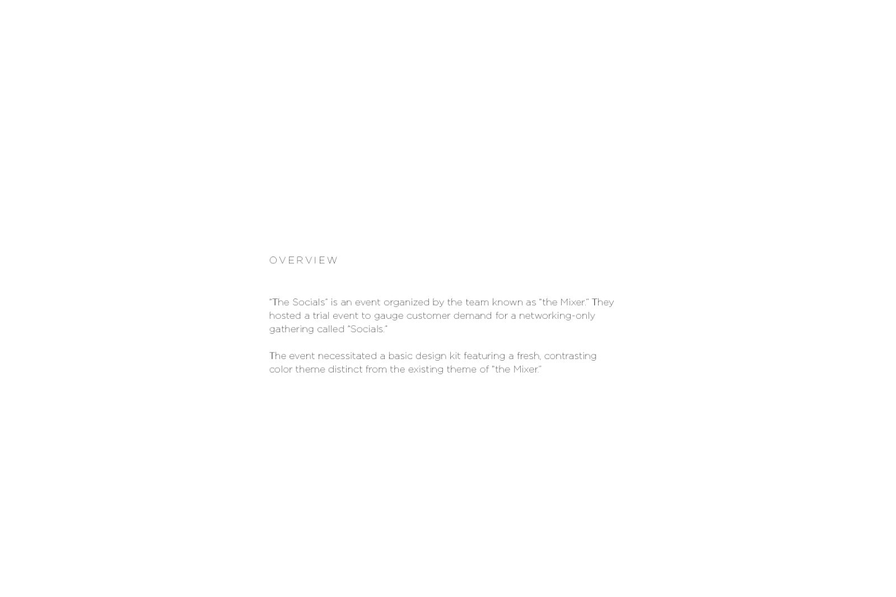
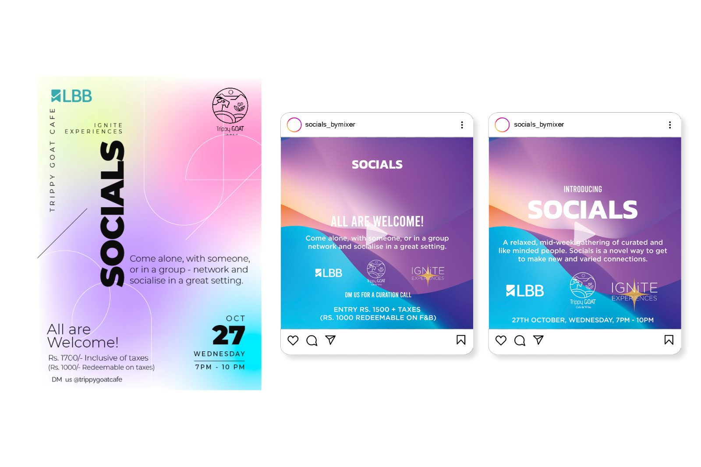
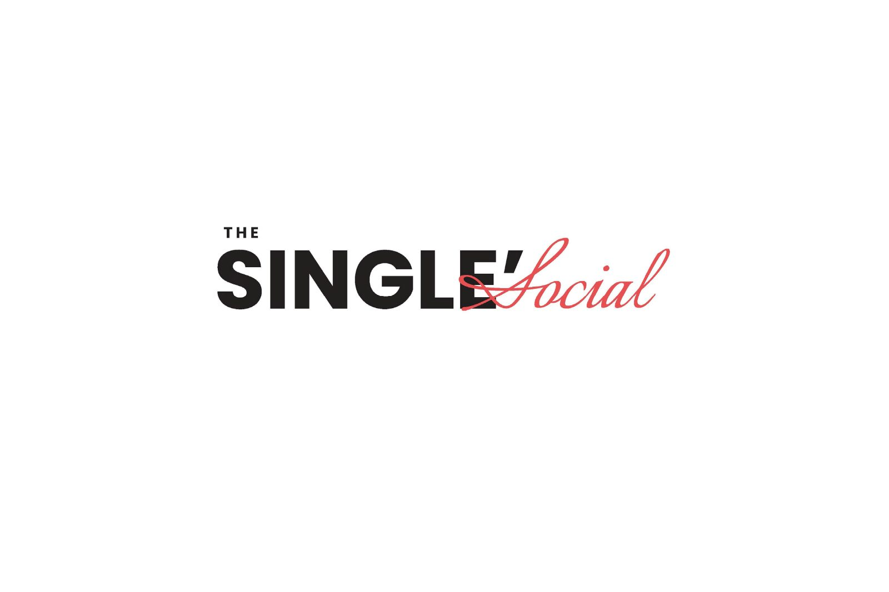
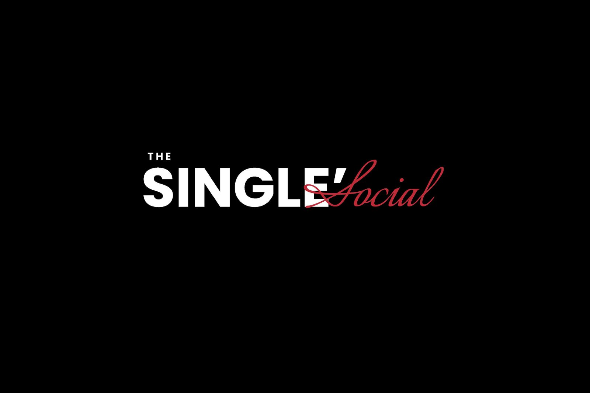
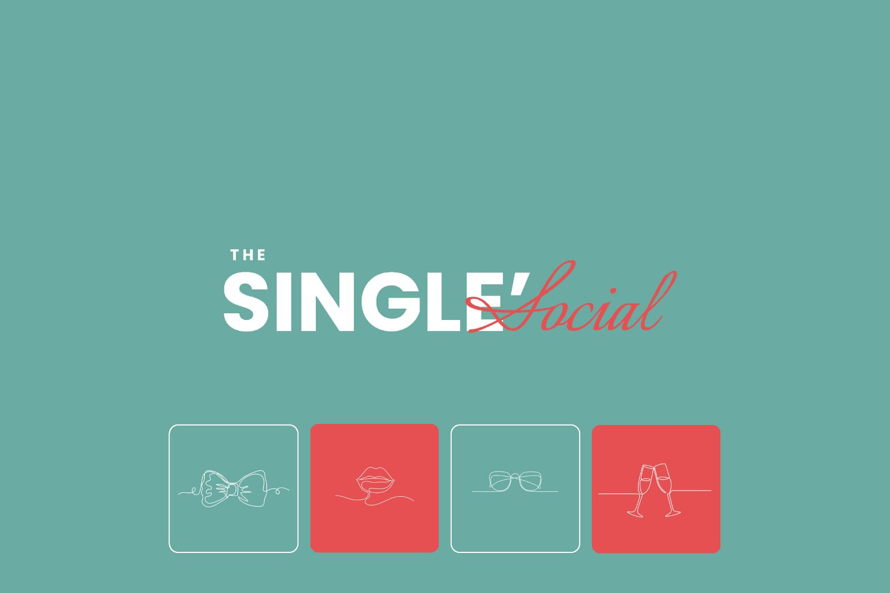
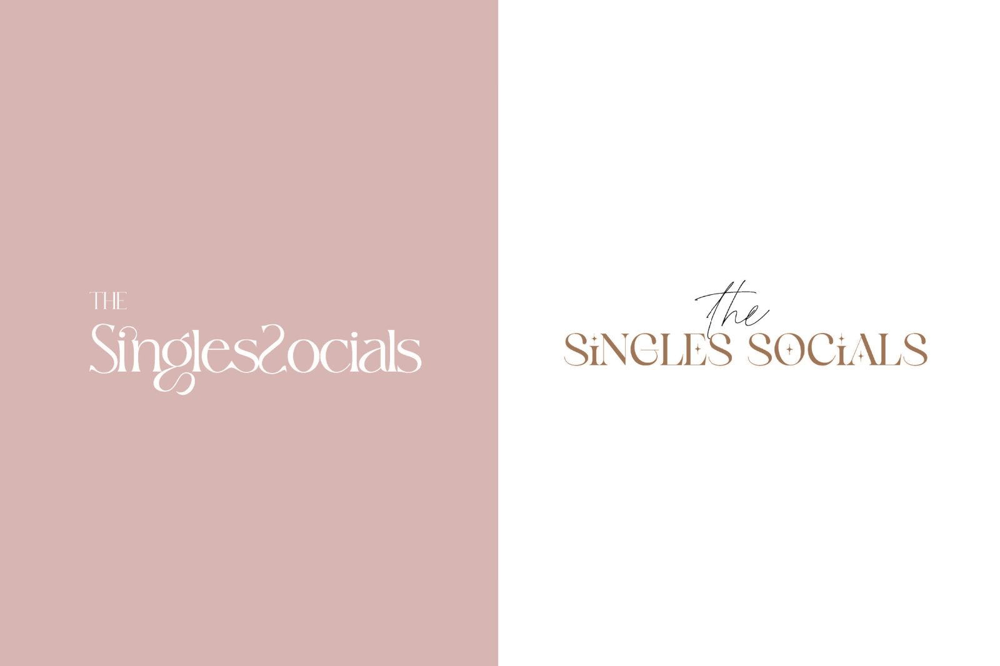
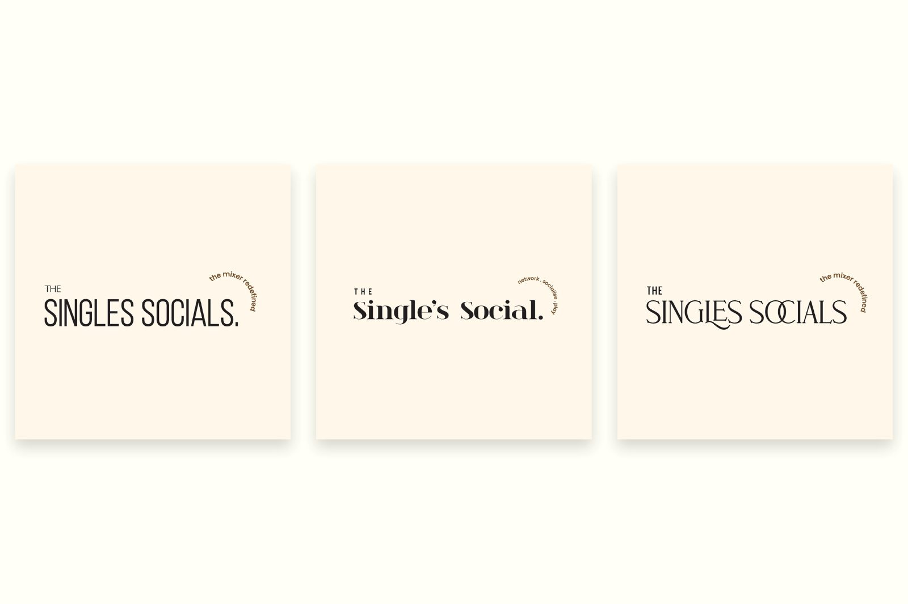

Socials
A dating night from Trippy Goat, run by the team behind the Mixer and intended as a quarterly fixture — a reason for people to meet each other, and for a venue to fill its room, in the middle of Covid. The kit needed a fresh, contrasting colour theme distinct from the existing Mixer identity.
A dating night, built to come back every quarter.
Socials was Trippy Goat’s, run by the team behind the Mixer. The format was a dating night: individuals, coming on their own, to meet other people. The intent was a quarterly fixture rather than a one-off.
It was designed for Covid, and the timing explains the shape of it. A venue needed customers through the door on nights it would otherwise be empty, and people had spent a long stretch not meeting anyone. The event answered both at once, which is why it had to read as an easy evening out rather than as a singles night with something to prove.
The scope was a design kit and identity, deliberately distinct from the Mixer’s.
Share the discipline, share none of the colour.
The Mixer’s identity is dark and gold. Socials moves to a cyan-to-violet gradient that has nothing in common with it, while keeping the same typographic discipline and structural logic — the same hand, plainly a different proposition.
The campaign ran with LBB, and the assets carry an open invitation — come alone, with someone, or in a group. Turning up by yourself is the whole premise and also the thing that stops people coming, so the line does the real work on the poster.
A second strand takes The Single’s Social through wordmark, colourways, script variants and an icon set.
Eight pages, front to back.







